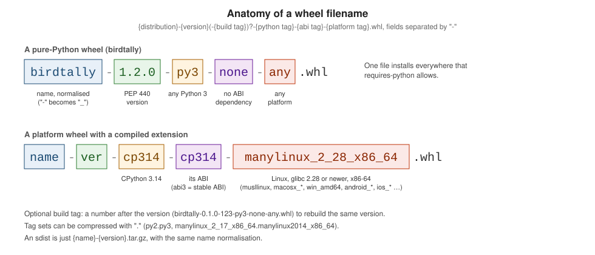

Building sdists & Wheels
|
This content was generated with the assistance of AI and should be verified against the official documentation before being relied on in production. |
Two files are uploaded for a pure-Python release: the sdist (.tar.gz, the source plus PKG-INFO) and the wheel (.whl,
ready to unpack into site-packages); what each contains is explained on
Packaging Concepts & Standards.
This page builds them for birdtally with build 1.6.1 (pip flavour, hatchling 1.32.4) and Poetry 2.5.1 (poetry-core 2.5.0), on
CPython 3.14.6 on Linux on 2026-10-22. Scratch paths are shortened to ….

python -m build
python -m pip install build==1.6.1
python -m build --report build-report.json* Creating isolated environment: venv+pip...
* Installing packages in isolated environment:
- hatchling>=1.27
* Getting build dependencies for sdist...
* Installed build dependency versions:
- hatchling==1.32.4
* Building sdist...
* Building wheel from sdist
* Creating isolated environment: venv+pip...
* Installing packages in isolated environment:
- hatchling>=1.27
* Getting build dependencies for wheel...
* Installed build dependency versions:
- hatchling==1.32.4
* Building wheel...
Successfully built birdtally-0.1.0.tar.gz and birdtally-0.1.0-py3-none-any.whlBy default build makes the sdist from the project, then the wheel from that sdist, each in a fresh isolated environment with the
[build-system] requires. A file missing from the sdist therefore also breaks the wheel, which is the point: what you upload is
consistent. --report writes the artefacts' names, kinds, sizes and SHA-256 hashes as JSON (outside dist/, so it
is not uploaded):
{
"version": "1.0",
"artifacts": [
{
"name": "birdtally-0.1.0.tar.gz",
"path": "…/dist/birdtally-0.1.0.tar.gz",
"kind": "sdist",
"size": 2649,
"hashes": {
"sha256": "636bbe86…"
}
},
…
]
}| Option | Meaning |
|---|---|
|
Build only that (both given: each from the project, not the wheel from the sdist). |
|
Output directory (default |
|
Backend settings (repeatable). A value starting with a hyphen needs the |
|
The same as one JSON object, for nested settings; not combinable with |
|
Which installer fills the isolated environment (uv must be installed). |
|
Build in the current environment; the build requirements must already be installed. |
|
With |
|
Create the isolated environment there; kept on failure for inspection. |
|
Where the sdist is unpacked for the wheel build (stable paths for compiler caches). |
|
Print the wheel’s metadata as JSON (building it first unless given a |
|
The JSON report above. |
|
Constrain the build dependencies, for reproducible build environments. |
|
Less or more output. |
python -m build --metadata{
"summary": "Tally bird-survey sightings from CSV files.",
"license_files": [
"LICENSE"
],
"metadata_version": "2.5",
"name": "birdtally",
"provides_extra": [
"pretty"
],
"version": "0.1.0",
"license_expression": "MIT",
…
}The pyproject-build command is the same program. The isolated environment downloads the backend from the configured index:
behind a corporate index set PIP_INDEX_URL (and keyring for credentials), which build’s pip honours.
poetry build
poetry build --clean
tar tzf dist/birdtally-0.1.0.tar.gzBuilding birdtally (0.1.0)
Building sdist
- Building sdist
- Built birdtally-0.1.0.tar.gz
Building wheel
- Building wheel
- Built birdtally-0.1.0-py3-none-any.whl
birdtally-0.1.0/CHANGELOG.md
birdtally-0.1.0/LICENSE
birdtally-0.1.0/README.md
birdtally-0.1.0/pyproject.toml
birdtally-0.1.0/src/birdtally/__init__.py
birdtally-0.1.0/src/birdtally/cli.py
birdtally-0.1.0/src/birdtally/py.typed
birdtally-0.1.0/src/birdtally/tally.py
birdtally-0.1.0/PKG-INFOOptions: -f/--format sdist|wheel, --clean (empty the output directory first), -o/--output DIR (1.8), -c/--config-settings
KEY=VALUE (2.1), and the deprecated -l/--local-version. Unlike build, poetry build builds the wheel from the project
directory, not from the sdist. Since 2.1 it uses the backend in [build-system], in an isolated environment when that is not
the poetry-core Poetry bundles. Only CHANGELOG.md is extra here because of
include = [{ path = "CHANGELOG.md", format = "sdist" }].
pip wheel
pip wheel --no-deps -w wheelhouse . also builds a wheel through the backend, but no sdist, and it is meant for wheelhouses of
dependencies, not for releases:
Created wheel for birdtally: filename=birdtally-0.1.0-py3-none-any.whl size=3736 sha256=35a50693…
Stored in directory: /tmp/pip-ephem-wheel-cache-67guagi_/wheels/91/5a/05/c979e85eddb41fc2817c3411fb67082e6776f1ff5db2d88c98
Successfully built birdtallyInspecting what was built
Look inside before every first release and whenever the build configuration changes:
unzip -l dist/birdtally-0.1.0-py3-none-any.whl
unzip -p dist/birdtally-0.1.0-py3-none-any.whl birdtally-0.1.0.dist-info/RECORD
tar tzf dist/birdtally-0.1.0.tar.gzbirdtally/__init__.py,sha256=…,223
birdtally/cli.py,sha256=…,1089
birdtally/py.typed,sha256=…,0
birdtally/tally.py,sha256=…,979
birdtally-0.1.0.dist-info/METADATA,sha256=…,671
birdtally-0.1.0.dist-info/WHEEL,sha256=…,88
birdtally-0.1.0.dist-info/entry_points.txt,sha256=…,48
birdtally-0.1.0.dist-info/licenses/LICENSE,sha256=…,819
birdtally-0.1.0.dist-info/RECORD,,(the RECORD of the poetry-core wheel, hashes shortened). Check that every module and data file is present, that tests and local
files are not, that licenses/ holds the license, and that METADATA (wheel) and PKG-INFO (sdist) carry the right version,
Requires-Python and dependencies. RECORD lists each file’s hash; installers verify it.
Filenames: the distribution name is normalised with - replaced by _, so a project named Bird-Tally builds
bird_tally-0.1.0.tar.gz and bird_tally-0.1.0-py3-none-any.whl. The rest of a wheel name is the version, an optional build tag
and the compatibility tags (figure above; platform tags are on
Binary Wheels & Extension Modules).
Reproducible builds
A reproducible build gives byte-identical files from the same source, so anyone can check that a published file matches its
source. The standard knob is SOURCE_DATE_EPOCH, a fixed timestamp for the archive entries:
| Backend | Two builds of birdtally |
|---|---|
hatchling 1.32.4 |
Identical by default: entries are dated 2020-02-02, and the wheel built here had the same SHA-256 ( |
poetry-core 2.5.0 |
Identical by default ( |
setuptools 84.2.1 |
Different on each run ( |
Pin the build dependencies too (--dependency-constraints-txt), or a new backend release changes the output.
When the build fails
| Message | Cause and fix |
|---|---|
|
A typo in |
No |
Not an error for build: it falls back to setuptools' legacy backend and silently builds a setuptools wheel (here with a
|
|
The backend’s file selection: check |
|
With |
build 1.6.0 (2026-08-27) added --report, --env-dir, --sdist-extract-dir, sdists as srcdir, .whl input for --metadata,
the dependency summary printed in isolated builds and the more detailed unmet-dependency message. Every failure ends with
build’s tip: pass --env-dir and --sdist-extract-dir to keep the build environment and sources, which
leaves both behind for inspection.